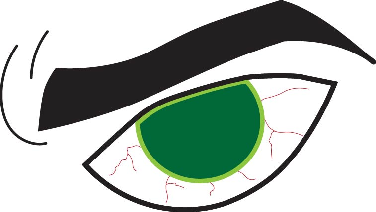

For this assignment, I chose to make an eye depicting anger on Illustrator using the colors red and green. I was initially unsure of using these colors, as I heavily associate them with Christmas; but I think using two shades of green for the eyes and red for the veins helped. I tried to experiment with using either of the colors for the eyebrow, but I decided to keep it black as using either green or red ended up looking overwhelming.